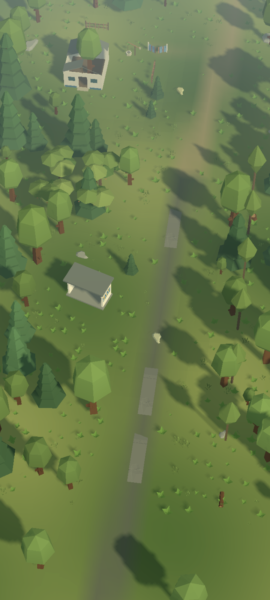
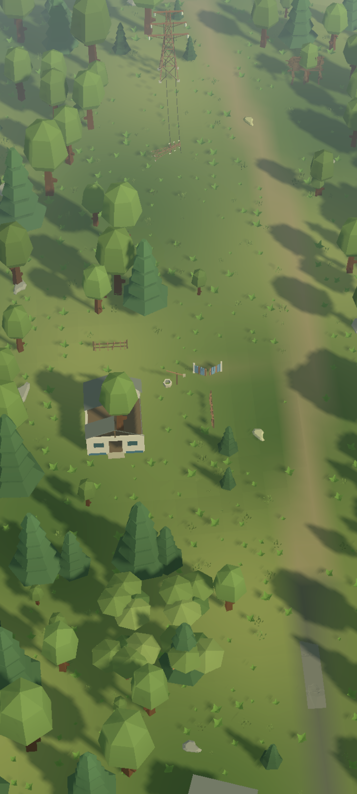
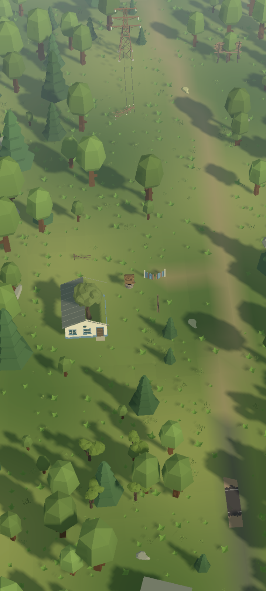
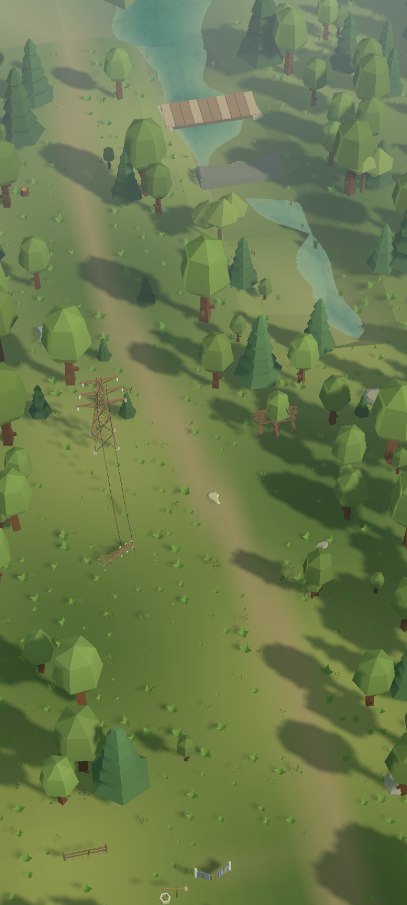
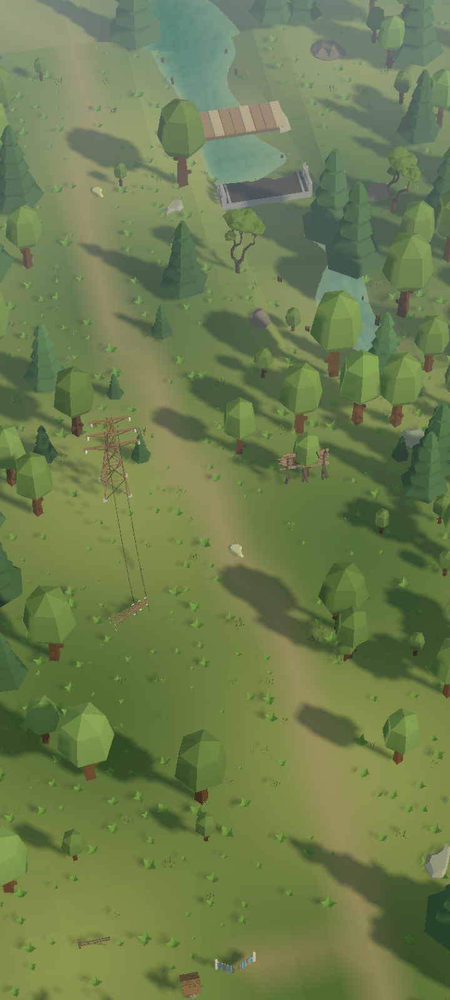
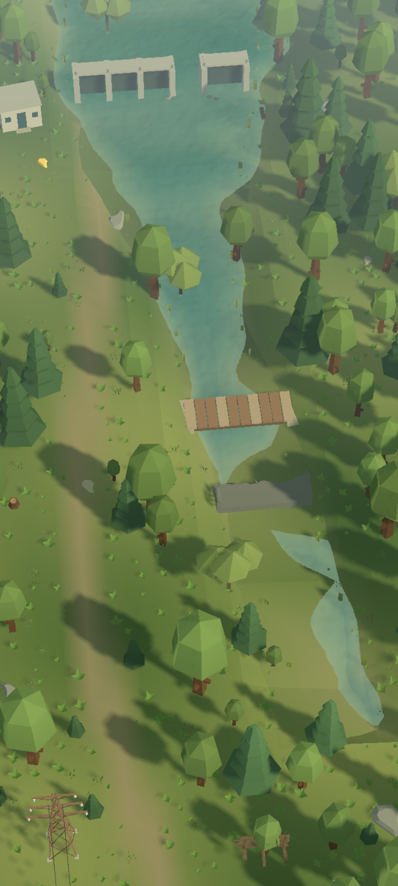
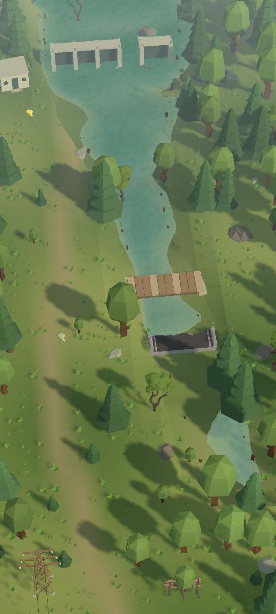
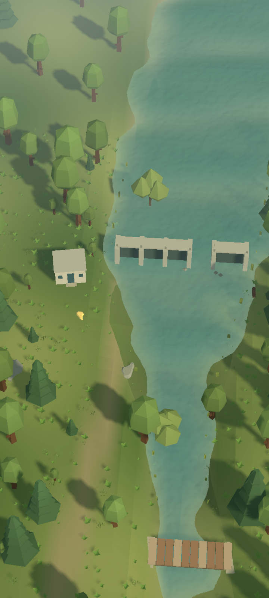
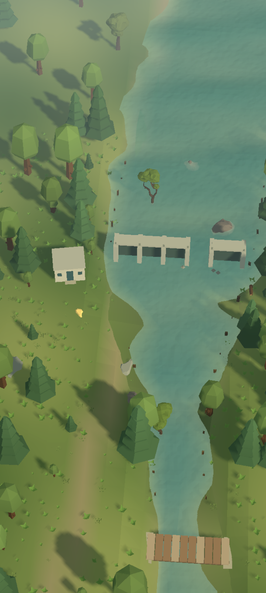

QC001 · Остання зупинка



Виразніші дерева, криниця, зламана огорожа й берегові камені. Однакова камера та освітлення дають змогу оцінити саме добір моделей. На вузькому екрані початковий кадр можна розгорнути.









Editor URP, Low/Balanced перевірено окремо. Ці кадри не вимірюють mobile FPS; player builds не створювались.